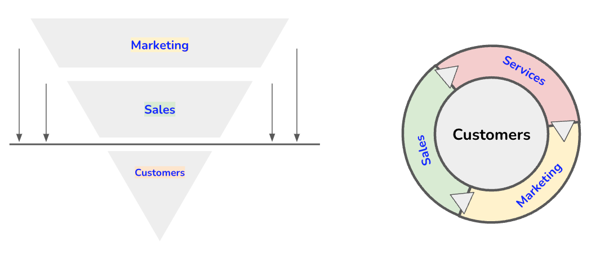

Connecting Marketing, Sales, and Customer Service Strategies
|
|
IN THIS SECTION, YOU WILL: Learn how IT architects can play a vital role in optimizing marketing, sales, and customer care by integrating technology, data, automation, and security to create seamless customer experiences, improve efficiency, and drive business growth.
KEY POINTS:
- Seamless Integration of Marketing, Sales, and Customer Care – IT architects ensure that CRM, marketing automation, analytics, and e-commerce platforms are well-integrated to eliminate silos and enhance efficiency.
- Data-Driven Decision Making – Customer data platforms (CDPs) and AI analytics provide actionable insights that personalize engagement and improve customer acquisition and retention.
- Automation & AI for Efficiency – AI-driven chatbots, predictive analytics, and automated lead nurturing improve customer interactions and sales effectiveness.
- Security & Compliance – IT architecture must protect customer data privacy by ensuring compliance with regulations (e.g., GDPR, CCPA) and securing third-party integrations.
- Scalability & Performance Optimization – IT systems should support business growth by enabling flexible, high-performance digital platforms for expanding marketing and sales operations.
In the modern digital economy, IT architects play a pivotal role in shaping an organization’s marketing, sales, and customer care strategies (Figure 1). By leveraging technology, data, and architectural insights, they can enhance these functions to align seamlessly with business objectives. This chapter delves into how IT architecture principles can be applied to optimize marketing, sales, and customer care strategies, ensuring better efficiency and impact.
 Figure 1: Comparison of two models illustrating the relationship between marketing, sales, and customer care. The left model represents a traditional linear funnel where marketing leads to sales and then to customers. The right model presents a cyclical view where marketing, sales, and services continuously interact with and support customers.
Marketing strategies involve driving comprehensive plans designed to promote products or services to target audiences. These strategies encompass market research, branding, advertising, and customer engagement initiatives aimed at creating demand and building brand awareness. Effective marketing strategies are data-driven, leveraging customer insights to tailor messages and select appropriate channels for maximum reach and impact. For instance, utilizing customer feedback can inform marketing content, ensuring it resonates with the target audience.
Sales strategies focus on converting prospects into customers and maximizing revenue. This involves setting clear sales objectives, identifying target markets, and developing processes for lead generation, qualification, and closing deals. Effective sales strategies often include personalized approaches, relationship-building techniques, and leveraging customer data to anticipate needs and tailor offerings accordingly. Implementing a structured sales strategy ensures that sales teams are aligned with business goals and equipped to meet customer expectations.
Customer care strategies drive plans that define how a company will support its customers throughout their journey. These strategies aim to enhance customer satisfaction, foster loyalty, and drive business growth. Key components include aligning teams, processes, and technology to ensure consistent, efficient, and high-quality service across all touchpoints. An effective customer care strategy focuses on understanding customer needs, setting performance metrics, and integrating customer feedback to continually improve service delivery.
These three business functions and their strategies are tightly connected, where typically marketing generates leads that sales teams convert into customers, who then receive ongoing support from customer care.
Comparing Marketing, Sales, and Customer Service
Between Marketing, Sales, and Customer Care have a number of similarities:
- All three functions aim to enhance customer experiences and drive business growth.
- Each relies on customer data to tailor strategies and improve engagement.
- All benefit from integrated technology solutions for efficiency and effectiveness.
- A seamless transition from marketing to sales to customer care ensures customer satisfaction and loyalty.
Differences Between Marketing, and Customer Care:
- Focus: Marketing attracts potential customers, sales converts them into buyers, and customer care ensures continued satisfaction and retention.
- Timeline: Marketing works on long-term brand positioning, sales focuses on immediate revenue generation, and customer care emphasizes long-term relationships.
- Approach: Marketing is broad and proactive, sales is direct and transactional, and customer care is responsive and service-oriented.
Marketing, sales, and customer care must work together to create a seamless customer journey. Synergies include:
- Enhanced Customer Insights: Collaboration among marketing, sales, and customer care teams provides a comprehensive understanding of customer behaviors and preferences. For example, customer service interactions can provide valuable insights that inform marketing campaigns and sales approaches.
- Consistent Messaging: These functions ensure that customers receive uniform messages across all touchpoints, strengthening brand identity and trust.
- Improved Customer Retention: Integrated strategies facilitate a seamless customer journey, enhancing satisfaction and loyalty, which can lead to increased sales and positive word-of-mouth referrals.
Despite their synergies, marketing, sales, and customer care can sometimes be at odds due to the:
- Lead Quality Disputes: Marketing may generate a high volume of leads that sales consider unqualified.
- Different Success Metrics: Marketing success is often measured by brand awareness and lead generation. At the same time, sales are judged by revenue and conversion rates, and customer care may emphasize satisfaction and retention.
- Timing Misalignment: Marketing campaigns may generate interest at a pace that does not align with sales targets or cycles. And sales may increase the number of customers at a pace that customer service cannot support.
- Resource Allocation: Disputes can arise over budget and resource distribution, especially if one function is perceived as more critical to business success.
- Data Silos: Without proper integration, valuable customer data may remain isolated within departments, hindering a holistic understanding of the customer and reducing the effectiveness of strategies.
IT Architecture Role in Supporting Marketing, Sales, and Customer Service
Before diving into solutions, IT architects must first understand the business context of marketing, sales, and customer care. This understanding involves:
- Identifying key business objectives (e.g., revenue growth, market expansion, customer engagement, and retention).
- Understanding customer personas and behavior patterns.
- Mapping existing workflows and their dependencies on IT systems.
By having a holistic understanding of these aspects, IT architects can ensure that technology solutions align with business needs rather than becoming disconnected silos.
Data-Driven Decision-Making
Marketing and sales thrive on data. IT architects can ensure that organizations have a well-structured data architecture to:
- Aggregate and analyze customer interactions across multiple channels (web, mobile, social media, etc.).
- Build customer data platforms (CDPs) to provide a unified view of customer journeys.
- Implement AI-driven analytics to derive actionable insights for targeted marketing and sales strategies.
Scalability and Performance Optimization
As businesses grow, marketing campaigns and sales operations must scale efficiently. IT architects can:
- Design solutions that allow seamless scaling of marketing automation platforms and CRM systems.
- Optimize website and application performance to reduce latency and improve customer experiences.
- Implement architectures that enable flexible and modular digital marketing and sales platforms.
Integration of Sales and Marketing Technologies
Disconnected sales and marketing systems often result in inefficiencies. IT architects can:
- Ensure seamless integration between CRM, marketing automation, e-commerce platforms, and analytics tools.
- Enable real-time data sharing between departments to facilitate personalized customer engagement.
- Implement architectures that allow third-party tools to be integrated without disrupting existing workflows.
Security and Compliance
Customer data security is paramount in marketing and sales operations. IT architects must:
- Ensure compliance with data privacy regulations such as GDPR and CCPA.
- Implement robust security architectures, including encryption, access controls, and anomaly detection mechanisms.
- Enable secure third-party integrations without exposing sensitive customer information.
Automation and AI
Automation and AI-powered solutions enhance efficiency and effectiveness in marketing and sales. IT architects can:
- Implement AI chatbots for personalized customer interactions.
- Automate lead generation and nurturing processes through AI-driven recommendation engines.
- Leverage predictive analytics to forecast customer behavior and optimize sales strategies.
Summary
IT architects are critical in optimizing marketing, sales, and customer care strategies by applying architectural thinking to data, integration, automation, and security. By aligning technology with business objectives, IT architects can drive digital transformation in these functions, leading to increased efficiency, better customer experiences, and improved revenue growth.
Organizations that effectively use IT architecture in their marketing, sales, and customer care strategies will be better positioned for competitive advantage in the digital economy.
To Probe Further
-
This is Marketing by Seth Godin, by Seth Godin, 2018.
-
On Strategic Marketing, BRB, 2013.
-
On Sales, BRB, 2017.
Questions to Consider
- How effectively does your organization integrate IT solutions across marketing, sales, and customer care?
- What data-driven strategies are currently in place to improve customer engagement and sales? How well are CRM, marketing automation, and analytics tools integrated within your company? Are there inefficiencies or data silos?*
- What role does AI and automation play in your customer journey, and how could these technologies be expanded?
- How does your IT architecture support scalability for growing marketing campaigns and high-traffic sales periods?
- What measures are in place to ensure customer data security and compliance with privacy regulations?
- How can IT help align marketing, sales, and customer care to reduce inefficiencies and improve customer retention?
- What challenges does your organization face in optimizing digital customer experiences, and how can IT architecture help?
- How can real-time data sharing between sales and customer care teams be improved to create better customer experiences?
- What emerging technologies (e.g., AI, predictive analytics, chatbots) could be leveraged to enhance customer engagement and sales efficiency?